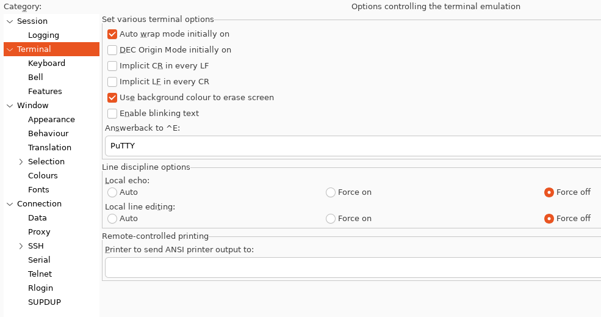
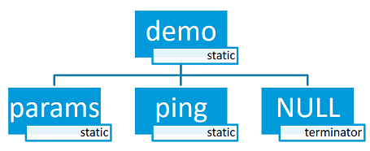
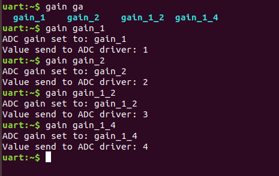
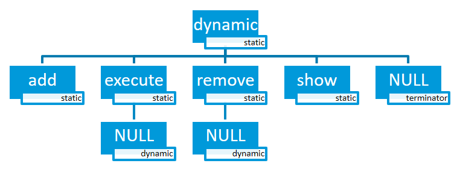
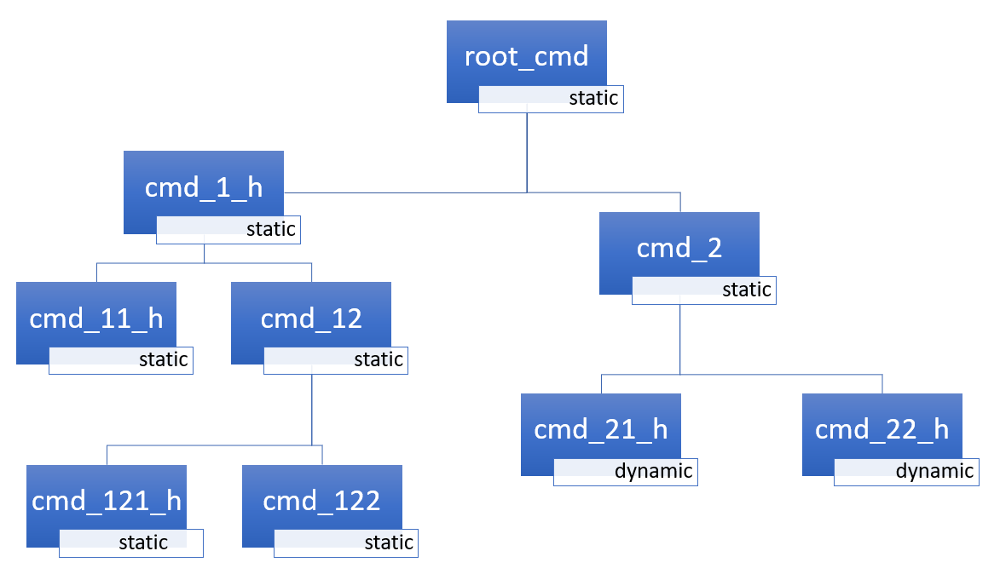
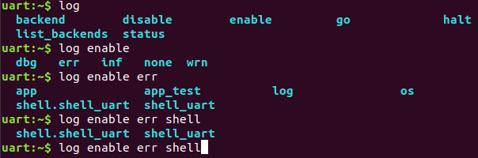
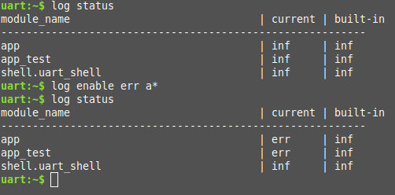

Shell
Overview
This module allows you to create and handle a shell with a user-defined command set. You can use it in examples where more than simple button or LED user interaction is required. This module is a Unix-like shell with these features:
Support for multiple instances.
Advanced cooperation with the Logging.
Support for static and dynamic commands.
Support for dictionary commands.
Smart command completion with the Tab key.
Built-in commands: clear, shell, colors, echo, history and resize.
Viewing recently executed commands using keys: ↑ ↓ or meta keys.
Text edition using keys: ←, →, Backspace, Delete, End, Home, Insert.
Support for ANSI escape codes:
VT100andESC[n~for cursor control and color printing.Support for editing multiline commands.
Built-in handler to display help for the commands.
Support for wildcards:
*and?.Support for meta keys.
Support for getopt and getopt_long.
Kconfig configuration to optimize memory usage.
Note
Some of these features have a significant impact on RAM and flash usage,
but many can be disabled when not needed. To default to options which
favor reduced RAM and flash requirements instead of features, you should
enable CONFIG_SHELL_MINIMAL and selectively enable just the
features you want.
Backends
The module can be connected to any transport for command input and output. At this point, the following transport layers are implemented:
MQTT
Segger RTT
SMP
Telnet
UART
USB
Bluetooth LE (NUS)
RPMSG
DUMMY - not a physical transport layer.
Telnet
Enabling CONFIG_SHELL_BACKEND_TELNET will allow users to use telnet
as a shell backend. Connecting to it can be done using PuTTY or any telnet client.
For example:
telnet <ip address> <port>
By default the telnet client won’t handle telnet commands and configuration. Although
command support can be enabled with CONFIG_SHELL_TELNET_SUPPORT_COMMAND.
This will give the telnet client access to a very limited set of supported commands but
still can be turned on if needed. One of the command options it supports is the ECHO
option. This will allow the client to be in character mode (character at a time),
similar to a UART backend in that regard. This will make the client send a character
as soon as it is typed having the effect of increasing the network traffic
considerably. For that cost, it will enable the line editing,
tab completion, and history
features of the shell.
USB CDC ACM
To configure Shell USB CDC ACM backend, simply add the snippet cdc-acm-console
to your build:
west build -S cdc-acm-console [...]
Details on the configuration settings are captured in the following files:
Bluetooth LE (NUS)
To configure Bluetooth LE (NUS) backend, simply add the snippet nus-console
to your build:
west build -S nus-console [...]
Details on the configuration settings are captured in the following files:
Segger RTT
To configure Segger RTT backend, add the following configurations to your build:
Details on additional configuration settings are captured in: samples/subsys/shell/shell_module/prj_minimal_rtt.conf.
Using west
Attach to and configure RTT with:
$ west rtt
Note
If your default runner does not have support for RTT, check your board’s documentation page for any other runners that support RTT. You may then use the
--runneroption to specify a different runner.
$ west rtt --runner <runner>
Using PuTTY
Use following procedure:
Open debug session and continue running the application.
west attach
Open
PuTTY. Use telnet port 19021 and specific Terminal configuration. SetLocal echotoForce offandLocal line editingtoForce off(see image below).

Now you should have a network connection to RTT that will let you enter input to the shell.
Connecting to Segger RTT via TCP (on macOS, for example)
On macOS JLinkRTTClient won’t let you enter input. Instead, please use following procedure:
Open up a first Terminal window and enter:
JLinkRTTLogger -Device NRF52840_XXAA -RTTChannel 1 -if SWD -Speed 4000 ~/rtt.log
(change device if required)
Open up a second Terminal window and enter:
nc localhost 19021
Now you should have a network connection to RTT that will let you enter input to the shell. However, contrary to PuTTY some features like
Tabcompletion do not work.
Commands
Shell commands are organized in a tree structure and grouped into the following types:
Root command (level 0): Gathered and alphabetically sorted in a dedicated memory section.
Static subcommand (level > 0): Number and syntax must be known during compile time. Created in the software module.
Dynamic subcommand (level > 0): Number and syntax does not need to be known during compile time. Created in the software module.
Commonly-used command groups
The following list is a set of useful command groups and how to enable them:
GPIO
I2C
Sensor
Flash
File-System
ADC
Creating commands
Use the following macros for adding shell commands:
SHELL_CMD_REGISTER- Create root command. All root commands must have different name.SHELL_COND_CMD_REGISTER- Conditionally (if compile time flag is set) create root command. All root commands must have different name.SHELL_CMD_ARG_REGISTER- Create root command with arguments. All root commands must have different name.SHELL_COND_CMD_ARG_REGISTER- Conditionally (if compile time flag is set) create root command with arguments. All root commands must have different name.SHELL_CMD- Initialize a command.SHELL_COND_CMD- Initialize a command if compile time flag is set.SHELL_EXPR_CMD- Initialize a command if compile time expression is non-zero.SHELL_CMD_ARG- Initialize a command with arguments.SHELL_COND_CMD_ARG- Initialize a command with arguments if compile time flag is set.SHELL_EXPR_CMD_ARG- Initialize a command with arguments if compile time expression is non-zero.SHELL_STATIC_SUBCMD_SET_CREATE- Create a static subcommands array.SHELL_SUBCMD_DICT_SET_CREATE- Create a dictionary subcommands array.SHELL_DYNAMIC_CMD_CREATE- Create a dynamic subcommands array.
Commands can be created in any file in the system that includes include/zephyr/shell/shell.h. All created commands are available for all shell instances.
Static commands
Example code demonstrating how to create a root command with static subcommands.

/* Creating subcommands (level 1 command) array for command "demo". */
SHELL_STATIC_SUBCMD_SET_CREATE(sub_demo,
SHELL_CMD(params, NULL, "Print params command.",
cmd_demo_params),
SHELL_CMD(ping, NULL, "Ping command.", cmd_demo_ping),
SHELL_SUBCMD_SET_END
);
/* Creating root (level 0) command "demo" */
SHELL_CMD_REGISTER(demo, &sub_demo, "Demo commands", NULL);
Example implementation can be found under following location: samples/subsys/shell/shell_module/src/main.c.
Dictionary commands
This is a special kind of static commands. Dictionary commands can be used every time you want to use a pair: (string <-> corresponding data) in a command handler. The string is usually a verbal description of a given data. The idea is to use the string as a command syntax that can be prompted by the shell and corresponding data can be used to process the command.
Let’s use an example. Suppose you created a command to set an ADC gain. It is a perfect place where a dictionary can be used. The dictionary would be a set of pairs: (string: gain_value, int: value) where int value could be used with the ADC driver API.
Abstract code for this task would look like this:
static int gain_cmd_handler(const struct shell *sh,
size_t argc, char **argv, void *data)
{
int gain;
/* data is a value corresponding to called command syntax */
gain = (int)data;
adc_set_gain(gain);
shell_print(sh, "ADC gain set to: %s\n"
"Value send to ADC driver: %d",
argv[0],
gain);
return 0;
}
SHELL_SUBCMD_DICT_SET_CREATE(sub_gain, gain_cmd_handler,
(gain_1, 1, "gain 1"), (gain_2, 2, "gain 2"),
(gain_1_2, 3, "gain 1/2"), (gain_1_4, 4, "gain 1/4")
);
SHELL_CMD_REGISTER(gain, &sub_gain, "Set ADC gain", NULL);
This is how it would look like in the shell:

Dynamic commands
Example code demonstrating how to create a root command with static and dynamic subcommands. At the beginning dynamic command list is empty. New commands can be added by typing:
dynamic add <new_dynamic_command>
Newly added commands can be prompted or autocompleted with the Tab key.

/* Buffer for 10 dynamic commands */
static char dynamic_cmd_buffer[10][50];
/* commands counter */
static uint8_t dynamic_cmd_cnt;
/* Function returning command dynamically created
* in dynamic_cmd_buffer.
*/
static void dynamic_cmd_get(size_t idx,
struct shell_static_entry *entry)
{
if (idx < dynamic_cmd_cnt) {
entry->syntax = dynamic_cmd_buffer[idx];
entry->handler = NULL;
entry->subcmd = NULL;
entry->help = "Show dynamic command name.";
} else {
/* if there are no more dynamic commands available
* syntax must be set to NULL.
*/
entry->syntax = NULL;
}
}
SHELL_DYNAMIC_CMD_CREATE(m_sub_dynamic_set, dynamic_cmd_get);
SHELL_STATIC_SUBCMD_SET_CREATE(m_sub_dynamic,
SHELL_CMD(add, NULL,"Add new command to dynamic_cmd_buffer and"
" sort them alphabetically.",
cmd_dynamic_add),
SHELL_CMD(execute, &m_sub_dynamic_set,
"Execute a command.", cmd_dynamic_execute),
SHELL_CMD(remove, &m_sub_dynamic_set,
"Remove a command from dynamic_cmd_buffer.",
cmd_dynamic_remove),
SHELL_CMD(show, NULL,
"Show all commands in dynamic_cmd_buffer.",
cmd_dynamic_show),
SHELL_SUBCMD_SET_END
);
SHELL_CMD_REGISTER(dynamic, &m_sub_dynamic,
"Demonstrate dynamic command usage.", cmd_dynamic);
Example implementation can be found under following location: samples/subsys/shell/shell_module/src/dynamic_cmd.c.
Commands execution
Each command or subcommand may have a handler. The shell executes the handler that is found deepest in the command tree and further subcommands (without a handler) are passed as arguments. Characters within parentheses are treated as one argument. If shell won’t find a handler it will display an error message.
Commands can be also executed from a user application using any active backend
and a function shell_execute_cmd(), as shown in this example:
int main(void)
{
/* Below code will execute "clear" command on a DUMMY backend */
shell_execute_cmd(NULL, "clear");
/* Below code will execute "shell colors off" command on
* an UART backend
*/
shell_execute_cmd(shell_backend_uart_get_ptr(),
"shell colors off");
}
Enable the DUMMY backend by setting the Kconfig
CONFIG_SHELL_BACKEND_DUMMY option.
Commands execution example
Let’s assume a command structure as in the following figure, where:
root_cmd- root command without a handlercmd_xxx_h- command has a handlercmd_xxx- command does not have a handler

Example 1
Sequence: root_cmd cmd_1_h cmd_12_h
cmd_121_h parameter will execute command
cmd_121_h and parameter will be passed as an argument.
Example 2
Sequence: root_cmd cmd_2 cmd_22_h
parameter1 parameter2 will execute command
cmd_22_h and parameter1 parameter2
will be passed as an arguments.
Example 3
Sequence: root_cmd cmd_1_h parameter1
cmd_121_h parameter2 will execute command
cmd_1_h and parameter1, cmd_121_h and
parameter2 will be passed as an arguments.
Example 4
Sequence: root_cmd parameter cmd_121_h
parameter2 will not execute any command.
Command handler
Simple command handler implementation:
static int cmd_handler(const struct shell *sh, size_t argc,
char **argv)
{
ARG_UNUSED(argc);
ARG_UNUSED(argv);
shell_fprintf(shell, SHELL_INFO, "Print info message\n");
shell_print(sh, "Print simple text.");
shell_warn(sh, "Print warning text.");
shell_error(sh, "Print error text.");
return 0;
}
Function shell_fprintf() or the shell print macros:
shell_print, shell_info, shell_warn and
shell_error can be used from the command handler or from threads,
but not from an interrupt context. Instead, interrupt handlers should use
Logging for printing.
Command help
Every user-defined command or subcommand can have its own help description.
The help for commands and subcommands can be created with respective macros:
SHELL_CMD_REGISTER, SHELL_CMD_ARG_REGISTER,
SHELL_CMD, and SHELL_CMD_ARG.
Shell prints this help message when you call a command
or subcommand with -h or --help parameter.
Parent commands
In the subcommand handler, you can access both the parameters passed to
commands or the parent commands, depending on how you index argv.
When indexing
argvwith positive numbers, you can access the parameters.When indexing
argvwith negative numbers, you can access the parent commands.The subcommand to which the handler belongs has the
argvindex of 0.
static int cmd_handler(const struct shell *sh, size_t argc,
char **argv)
{
ARG_UNUSED(argc);
/* If it is a subcommand handler parent command syntax
* can be found using argv[-1].
*/
shell_print(sh, "This command has a parent command: %s",
argv[-1]);
/* Print this command syntax */
shell_print(sh, "This command syntax is: %s", argv[0]);
/* Print first argument */
shell_print(sh, "%s", argv[1]);
return 0;
}
Built-in commands
These commands are activated by CONFIG_SHELL_CMDS set to y.
clear - Clears the screen.
history - Shows the recently entered commands.
resize - Must be executed when terminal width is different than 80 characters or after each change of terminal width. It ensures proper multiline text display and ←, →, End, Home keys handling. Currently this command works only with UART flow control switched on. It can be also called with a subcommand:
default - Shell will send terminal width = 80 to the terminal and assume successful delivery.
These command needs extra activation:
CONFIG_SHELL_CMDS_RESIZEset toy.select - It can be used to set new root command. Exit to main command tree is with alt+r. This command needs extra activation:
CONFIG_SHELL_CMDS_SELECTset toy.shell - Root command with useful shell-related subcommands like:
echo - Toggles shell echo.
colors - Toggles colored syntax. This might be helpful in case of Bluetooth shell to limit the amount of transferred bytes.
stats - Shows shell statistics.
Tab Feature
The Tab button can be used to suggest commands or subcommands. This feature
is enabled by CONFIG_SHELL_TAB set to y.
It can also be used for partial or complete auto-completion of commands.
This feature is activated by
CONFIG_SHELL_TAB_AUTOCOMPLETION set to y.
When user starts writing a command and presses the Tab button then
the shell will do one of 3 possible things:
Autocomplete the command.
Prompts available commands and if possible partly completes the command.
Will not do anything if there are no available or matching commands.

History Feature
This feature enables commands history in the shell. It is activated by:
CONFIG_SHELL_HISTORY set to y. History can be accessed
using keys: ↑ ↓ or Ctrl+n and Ctrl+p
if meta keys are active.
Number of commands that can be stored depends on size
of CONFIG_SHELL_HISTORY_BUFFER parameter.
Wildcards Feature
The shell module can handle wildcards. Wildcards are interpreted correctly
when expanded command and its subcommands do not have a handler. For example,
if you want to set logging level to err for the app and app_test
modules you can execute the following command:
log enable err a*

This feature is activated by CONFIG_SHELL_WILDCARD set to y.
Note
When the wildcard feature is enabled, the characters * and ?
cannot be used as normal characters in commands or arguments.
Meta Keys Feature
The shell module supports the following meta keys:
Meta keys |
Action |
|---|---|
Ctrl+a |
Moves the cursor to the beginning of the line. |
Ctrl+b |
Moves the cursor backward one character. |
Ctrl+c |
Preserves the last command on the screen and starts a new command in a new line. |
Ctrl+d |
Deletes the character under the cursor. |
Ctrl+e |
Moves the cursor to the end of the line. |
Ctrl+f |
Moves the cursor forward one character. |
Ctrl+k |
Deletes from the cursor to the end of the line. |
Ctrl+l |
Clears the screen and leaves the currently typed command at the top of the screen. |
Ctrl+n |
Moves in history to next entry. |
Ctrl+p |
Moves in history to previous entry. |
Ctrl+t |
Toggles logs output on the shell when |
Ctrl+u |
Clears the currently typed command. |
Ctrl+w |
Removes the word or part of the word to the left of the cursor. Words separated by period instead of space are treated as one word. |
Alt+b |
Moves the cursor backward one word. |
Alt+f |
Moves the cursor forward one word. |
This feature is activated by CONFIG_SHELL_METAKEYS set to y.
sys_getopt Feature
Some shell users apart from subcommands might need to use options as well.
the arguments string, looking for supported options. Typically, this task
is accomplished by the getopt family functions.
For this purpose shell supports a variant of the getopt and getopt_long libraries from
the FreeBSD project called sys_getopt and sys_getopt_long. This feature is activated by:
CONFIG_GETOPT set to y and CONFIG_GETOPT_LONG
set to y.
This feature can be used in thread safe as well as non thread safe manner. The former is full compatible with regular getopt usage while the latter a bit differs.
An example non-thread safe usage:
char *cvalue = NULL;
while ((char c = sys_getopt(argc, argv, "abhc:")) != -1) {
switch (c) {
case 'c':
cvalue = sys_getopt_optarg;
break;
default:
break;
}
}
An example thread safe usage:
char *cvalue = NULL;
struct sys_getopt_state *state;
while ((char c = sys_getopt(argc, argv, "abhc:")) != -1) {
state = sys_getopt_state_get();
switch (c) {
case 'c':
cvalue = state->optarg;
break;
default:
break;
}
}
Thread safe sys_getopt functionality is activated by
CONFIG_SHELL_GETOPT set to y.
Obscured Input Feature
With the obscured input feature, the shell can be used for implementing a login prompt or other user interaction whereby the characters the user types should not be revealed on screen, such as when entering a password.
Once the obscured input has been accepted, it is normally desired to return the
shell to normal operation. Such runtime control is possible with the
shell_obscure_set function.
An example of login and logout commands using this feature is located in samples/subsys/shell/shell_module/src/main.c and the config file samples/subsys/shell/shell_module/prj_login.conf.
This feature is activated upon startup by CONFIG_SHELL_START_OBSCURED
set to y. With this set either way, the option can still be controlled later
at runtime. CONFIG_SHELL_CMDS_SELECT is useful to prevent entry
of any other command besides a login command, by means of the
shell_set_root_cmd function. Likewise, CONFIG_SHELL_PROMPT_UART
allows you to set the prompt upon startup, but it can be changed later with the
shell_prompt_change function.
Reading User Input
The shell provides a shell_readline() function that allows command handlers
to interactively read a line of input from the user. This is useful for implementing
commands that need to prompt the user for additional information, such as confirmation
dialogs, multi-step wizards, or interactive data entry.
The function reads from the shell transport until a newline character is received, storing the data in a provided buffer. The newline character itself is not included in the buffer. The buffer is automatically null-terminated on success.
Note
The shell_readline() function should be called from the shell thread in a
shell command handler and blocks the thread until a result is returned.
Example usage:
static int cmd_read_secret(const struct shell *sh, size_t argc, char **argv)
{
uint8_t input_buf[256];
int ret;
shell_fprintf_normal(sh, "Enter your secret: ");
shell_obscure_set(sh, true);
ret = shell_readline(sh, input_buf, sizeof(input_buf), K_SECONDS(10));
shell_obscure_set(sh, false);
if (ret < 0) {
if (ret == -ETIMEDOUT) {
shell_error(sh, "Timeout waiting for input");
} else if (ret == -ECANCELED) {
shell_error(sh, "Input canceled");
} else if (ret == -ENOBUFS) {
shell_error(sh, "Input too long");
}
return ret;
}
shell_print(sh, "Secret input received (%d bytes)", ret);
return 0;
}
Shell Logger Backend Feature
Shell instance can act as the Logging backend. Shell ensures that log
messages are correctly multiplexed with shell output. Log messages from logger
thread are enqueued and processed in the shell thread. Logger thread will block
for configurable amount of time if queue is full, blocking logger thread context
for that time. Oldest log message is removed from the queue after timeout and
new message is enqueued. Use the shell stats show command to retrieve
number of log messages dropped by the shell instance. Log queue size and timeout
are SHELL_DEFINE arguments.
This feature is activated by: CONFIG_SHELL_LOG_BACKEND set to y.
Warning
Enqueuing timeout must be set carefully when multiple backends are used in the system. The shell instance could have a slow transport or could block, for example, by a UART with hardware flow control. If timeout is set too high, the logger thread could be blocked and impact other logger backends.
Warning
As the shell is a complex logger backend, it can not output logs if
the application crashes before the shell thread is running. In this
situation, you can enable one of the simple logging backends instead,
such as UART (CONFIG_LOG_BACKEND_UART) or
RTT (CONFIG_LOG_BACKEND_RTT), which are available earlier
during system initialization.
RTT Backend Channel Selection
Instead of using the shell as a logger backend, RTT shell backend and RTT log
backend can also be used simultaneously, but over different channels. By
separating them, the log can be captured or monitored without shell output or
the shell may be scripted without log interference. Enabling both the Shell RTT
backend and the Log RTT backend does not work by default, because both default
to channel 0. There are two options:
1. The Shell buffer can use an alternate channel, for example using
CONFIG_SHELL_BACKEND_RTT_BUFFER set to 1.
This allows monitoring the log using JLinkRTTViewer
while a script interfaces over channel 1.
2. The Log buffer can use an alternate channel, for example using
CONFIG_LOG_BACKEND_RTT_BUFFER set to 1.
This allows interactive use of the shell through JLinkRTTViewer, while the log
is written to file.
See shell backends for details on how to enable RTT as a Shell backend.
Usage
The following code shows a simple use case of this library:
int main(void)
{
}
static int cmd_demo_ping(const struct shell *sh, size_t argc,
char **argv)
{
ARG_UNUSED(argc);
ARG_UNUSED(argv);
shell_print(sh, "pong");
return 0;
}
static int cmd_demo_params(const struct shell *sh, size_t argc,
char **argv)
{
int cnt;
shell_print(sh, "argc = %d", argc);
for (cnt = 0; cnt < argc; cnt++) {
shell_print(sh, " argv[%d] = %s", cnt, argv[cnt]);
}
return 0;
}
/* Creating subcommands (level 1 command) array for command "demo". */
SHELL_STATIC_SUBCMD_SET_CREATE(sub_demo,
SHELL_CMD(params, NULL, "Print params command.",
cmd_demo_params),
SHELL_CMD(ping, NULL, "Ping command.", cmd_demo_ping),
SHELL_SUBCMD_SET_END
);
/* Creating root (level 0) command "demo" without a handler */
SHELL_CMD_REGISTER(demo, &sub_demo, "Demo commands", NULL);
/* Creating root (level 0) command "version" */
SHELL_CMD_REGISTER(version, NULL, "Show kernel version", cmd_version);
Users may use the Tab key to complete a command/subcommand or to see the available subcommands for the currently entered command level. For example, when the cursor is positioned at the beginning of the command line and the Tab key is pressed, the user will see all root (level 0) commands:
clear demo shell history log resize version
Note
To view the subcommands that are available for a specific command, you must first type a space after this command and then hit Tab.
These commands are registered by various modules, for example:
clear, shell, history, and resize are built-in commands which have been registered by subsys/shell/shell.c
demo and version have been registered in example code above by main.c
log has been registered by subsys/logging/log_cmds.c
Then, if a user types a demo command and presses the Tab key, the shell will only print the subcommands registered for this command:
params ping